第三章:使用亚马逊 SageMaker 自动驾驶仪的 AutoML
在前一章中，您了解了 Amazon SageMaker 如何帮助您构建和准备数据集。在一个典型的机器学习项目中，下一步将是开始实验算法，以便找到早期的拟合，并了解您可以从模型中预期的预测能力。
无论您使用传统的机器学习还是深度学习，在选择算法时，有三个选项可供选择:
- 编写您自己的，或自定义现有的。只有当你在统计学和计算机科学方面有很强的技能，如果你非常确定你能做得比调好的现成算法更好，并且如果你有足够的时间从事这个项目，这才有意义。面对现实吧，这些条件很少满足。
- 使用在您最喜欢的库中实现的内置算法，例如线性回归或 XGBoost 。对于深度学习问题，这包括 TensorFlow 、 PyTorch 等中可用的预训练模型。这个选项省去了你写机器学习代码的麻烦。相反，它让您专注于特征工程和模型优化。
- 使用 AutoML ，这是一种新兴技术，可以让你自动构建、训练和优化机器学习模型。
在这一章中，你将了解到Amazon SageMaker auto pilot，它是 Amazon sage maker 的 AutoML 功能部分，具有内置的模型解释能力。我们将了解如何在 Amazon SageMaker Studio 中使用它而无需编写任何代码，以及如何在 Amazon SageMaker SDK 中使用它:
- 发现亚马逊 SageMaker 自动驾驶仪
- 在 SageMaker Studio 中使用亚马逊 SageMaker 自动驾驶仪
- 使用 Amazon SageMaker Autopilot 和 SageMaker SDK
- 深入亚马逊 SageMaker 自动驾驶仪
技术要求
您将需要一个 AWS 帐户来运行本章中包含的示例。如果您还没有，请将浏览器指向https://aws.amazon.com/getting-started/来创建它。您还应该熟悉 AWS 免费层(https://aws.amazon.com/free/)，它允许您在一定的使用限制内免费使用许多 AWS 服务。
您需要为您的帐户(https://aws.amazon.com/cli/)安装和配置 AWS 命令行界面 ( CLI )。
您将需要一个工作的 Python 3.x 环境。安装 Anaconda 发行版(https://www.anaconda.com/)不是强制性的，但是强烈建议安装，因为它包含了我们将需要的许多项目(Jupyter、pandas、numpy等等)。
书中包含的代码示例可在 GitHub 上获得，网址为https://GitHub . com/packt publishing/Learn-Amazon-sage maker-second-edition。你需要安装一个 Git 客户端来访问它们(https://git-scm.com/)。
发现亚马逊 SageMaker 自动驾驶仪
在 2019 年末添加到亚马逊 SageMaker 的亚马逊 SageMaker 自动驾驶仪是一种 AutoML 功能，可以为你处理所有的机器学习步骤。你只需要上传一个列数据集到亚马逊 S3 桶，并定义你想要模型学习的列(目标属性)。然后，只需在 SageMaker Studio GUI 中点击几下，或者用 SageMaker SDK 编写几行代码，就可以启动自动驾驶作业。
SageMaker Autopilot 的简单性并不以透明度和控制为代价。您可以看到您的模型是如何构建的，并且您可以不断地进行实验来完善结果。在这方面，SageMaker Autopilot 应该对新手和经验丰富的从业者都有吸引力。
在本节中，您将了解到 SageMaker 自动驾驶仪工作的不同步骤，以及它们如何有助于交付高质量的模型:
- 分析数据
- 特征工程
- 模型调整
我们先来看看 SageMaker 自动驾驶仪是如何分析数据的。
分析数据
这一步负责了解类型的机器正在学习我们正在尝试到解决的问题。SageMaker 自动驾驶仪目前支持线性回归、二元分类、多类分类。
注意
一个常见的问题是“建立这样的模型需要多少数据？”这是一个令人惊讶的难题。答案——如果有的话——取决于许多因素，例如功能的数量和质量。作为一个基本的经验法则，一些从业者建议《10-100 时报》的样本要比特写多。无论如何，我建议你收集不少于数百个样本(对于每个类，如果你正在建立一个分类模型的话)。几千或者几万比较好，特别是你功能比较多的话。对于统计机器学习，很少需要数百万个样本，所以从你所拥有的开始，分析结果，并在开始数据收集之前进行迭代！
通过分析目标属性的分布，SageMaker 自动驾驶仪可以很容易地判断出哪一个是正确的。例如，如果目标属性只有两个值(比如“是”和“否”)，那么您可能会尝试构建一个二元分类模型。
然后，SageMaker Autopilot 计算数据集和各个列的统计数据:唯一值的数量、平均值、中值等等。机器学习实践者经常这样做，以便获得对数据的初步感觉，很高兴看到它自动化。此外，SageMaker Autopilot 生成了一个 Jupyter 笔记本,数据探索笔记本，以一种用户友好的方式呈现这些统计数据。
一旦 SageMaker Autopilot 分析了数据集，它就会建立候选管道，用于训练候选模型。管道是以下内容的组合:
- 一个数据处理工作，负责特征工程。正如你所猜测的，这个作业运行在 Amazon SageMaker 处理上，我们在 第 2 章 、 处理数据准备技术中研究过。
- 在已处理的数据集上运行的训练作业。算法包括 SageMaker、XGBoost 和多层感知器中的内置线性学习器。
接下来，我们来看看自动驾驶如何应用于特征工程。
特色工程
该步骤负责根据数据分析期间定义的管道对输入数据集进行预处理。
候选管道完全记录在另一个自动生成的笔记本中——候选生成笔记本。这款笔记本不仅仅是描述性的:你可以实际运行它的电池，手动重现 SageMaker Autopilot 执行的步骤。这种级别的透明度和控制是极其重要的，因为它让你确切地理解模型是如何构建的。因此，您能够验证它以它应该的方式执行，并且您能够向您的涉众解释它。此外，如果您愿意，您可以将笔记本电脑作为额外优化和调整的起点。
最后，让我们看看自动驾驶中的模型调整。
模型调整
该步骤负责根据数据分析过程中定义的管道训练和调整模型。对于每条管道，SageMaker Autopilot 将启动一个自动模型调整作业(我们将在后面的章节中详细介绍这个主题)。简而言之，每个调优作业都将使用超参数优化在处理过的数据集上训练大量越来越精确的模型。像往常一样，所有这些都发生在托管基础架构上。
一旦模型调优完成，您就可以在 Amazon SageMaker Studio 中查看模型信息和指标，构建可视化，等等。你可以用亚马逊 sage maker Experiments SDK 以编程方式做同样的事情。
最后，您可以使用 SageMaker Studio GUI 或 SageMaker SDK 像部署任何其他 SageMaker 模型一样部署您选择的模型。
现在我们已经了解了自动驾驶作业的不同步骤，让我们在 SageMaker Studio 中运行一个作业。
在 SageMaker Studio 中使用亚马逊 SageMaker 自动驾驶仪
我们将使用 only SageMaker Studio 构建一个模型。我们不会写一行机器学习代码，做好零代码 AI 的准备吧。
在本节中，您将学习如何执行以下操作:
- 在 SageMaker Studio 中启动一个 SageMaker 自动驾驶作业。
- 监控工作的不同步骤。
- 可视化模型并比较它们的属性。
启动作业
首先，我们需要一个数据集。我们将重用在 第 2 章 、处理数据准备技巧中使用的直销数据集。这个数据集描述了一个二元分类问题:一个客户是否会接受一个营销提议？它包含 41，000 多个带标签的客户样本。让我们开始吧:
- Let's open SageMaker Studio. Create a new Python 3 notebook using the Data Science kernel, as shown in the following screenshot: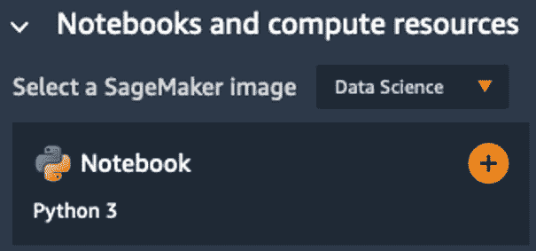
图 3.1–创建笔记本
- 现在，让我们下载并提取数据集如下:
%%sh apt-get -y install unzip wget -N https://sagemaker-sample-data-us-west-2.s3-us-west-2.amazonaws.com/autopilot/direct_marketing/bank-additional.zip unzip -o bank-additional.zip
- In Chapter 2, Handling Data Preparation Techniques, we ran a feature engineering script with Amazon SageMaker Processing. We will do no such thing here: we simply upload the dataset as is to S3, into the default bucket created by SageMaker:
import sagemaker prefix = 'sagemaker/DEMO-autopilot/input' sess = sagemaker.Session() uri = sess.upload_data(path=”./bank-additional/bank-additional-full.csv”, key_prefix=prefix) print(uri)
该数据集将在 S3 的以下位置提供:
s3://sagemaker-us-east-2-123456789012/sagemaker/DEMO-autopilot/input/bank-additional-full.csv
- Now, we click on the Components and registries icon in the left-hand vertical icon bar, as can be seen in the following screenshot. This opens the Experiments tab, and we click on the Create Autopilot Experiment button to create a new Autopilot job.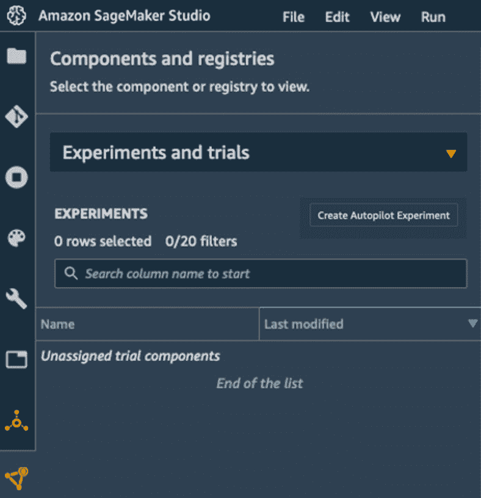
图 3.2–查看实验
- 下一个屏幕是我们配置作业的地方。让我们输入
my-first-autopilot-job作为实验名称。 - We set the location of the input dataset using the path returned in step 3. As can be seen in the following screenshot, we can either browse S3 buckets or enter the S3 location directly: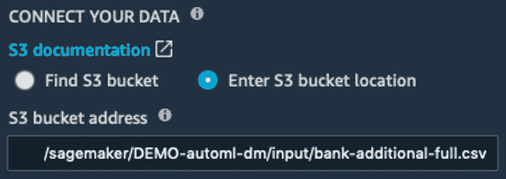
图 3.3–定义输入位置
- The next step is to define the name of the target attribute, as shown in the following screenshot. The column storing the "yes" or "no" label is called "y".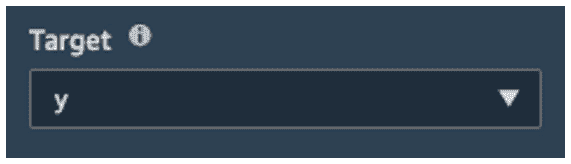
图 3.4–定义目标属性
- As shown in the following screenshot, we set the S3 output location where job artifacts will be copied to. I use
s3://sagemaker-us-east-2-123456789012/sagemaker/DEMO-autopilot/output/here, and you should, of course, update it with your own region and account number.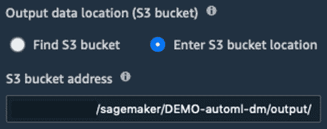图 3.5–定义输出位置
- We set the type of job we want to train, as shown in the following screenshot. Here, we select Auto in order to let SageMaker Autopilot figure out the problem type. Alternatively, we could select Binary classification, and pick our metric: Accuracy, AUC, or F1 (the default setting).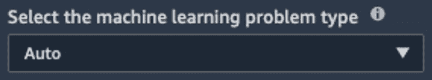
图 3.6–设置问题类型
- Finally, we decide whether we want to run a full job, or simply generate notebooks. We'll go with the former, as shown in the following screenshot. The latter would be a good option if we wanted to train and tweak the parameters manually. We also decide not to deploy the best model automatically for now.

图 3.7–运行一个完整的实验
- 可选地，在高级设置部分，我们将更改 IAM 角色，为作业工件设置加密密钥，定义我们希望启动作业实例的 VPC，等等。让我们在这里保留默认值。
- 作业设置完成:只需这一个屏幕。然后，我们点击创建实验，实验就开始了！
监控作业
一旦作业启动，它将经历我们已经讨论过的三个步骤，其中大约需要 5 个小时才能完成。新的实验列在实验选项卡中，我们可以右键单击描述 AutoML 作业来描述其当前状态。这将打开以下屏幕，我们可以在其中看到作业的进度:
- As expected, the job starts by analyzing data, as highlighted in the following screenshot: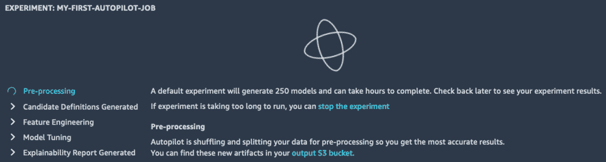
图 3.8–查看作业进度
- About 10 minutes later, data analysis is complete, and the job moves on to feature engineering, where the input dataset will be transformed according to the steps defined in the candidate pipelines. As shown in the following screenshot, we can also see new two buttons in the top-right corner, pointing at the candidate generation and data exploration notebooks: don't worry, we'll take a deeper look at both later in the chapter.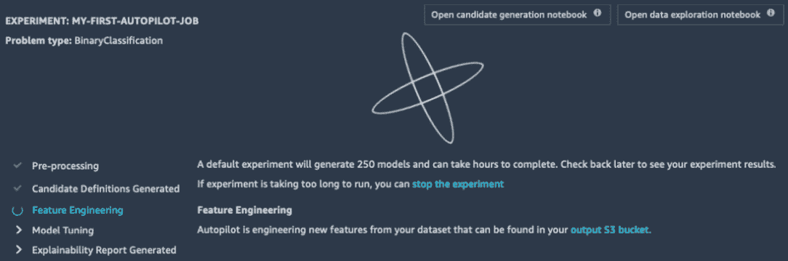
图 3.9–查看作业进度
- Once feature engineering is complete, the job then moves on to model tuning, where candidate models are trained and tuned. As can be seen in the following screenshot, the first training jobs quickly show up in the Trials tab. A "trial" is the name SageMaker uses for a collection of related jobs, such as processing jobs, batch transform jobs, and training jobs. We can see the Objective, that is to say, the metric that the job tried to optimize (in this case, it's the F1 score). We can sort jobs based on this metric, and the best tuning job so far is highlighted with a star.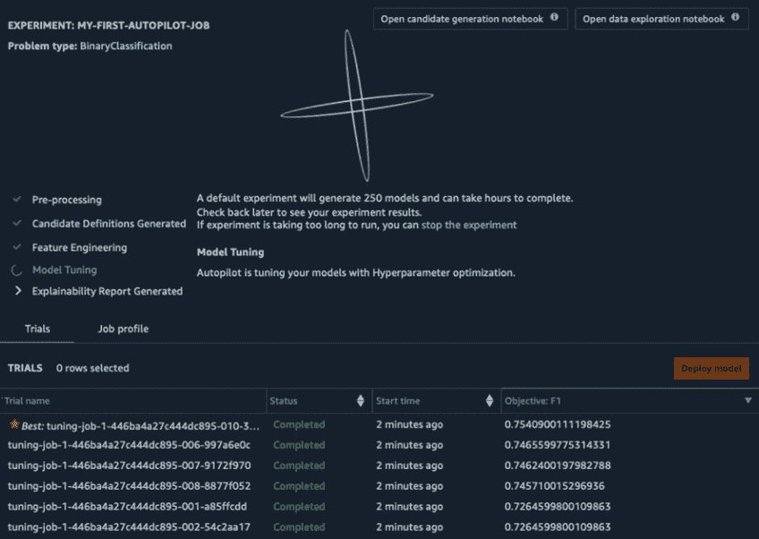
图 3.10–查看调优作业
- Once the AutoPilot job is complete, your screen should look similar to the following screenshot. Here, the top model has reached an F1 score of 0.8031.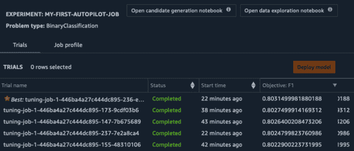
图 3.11–查看结果
- If we select the best job and right-click Open in model details, we can see a model explainability graph showing us the most important features, as can be seen in the following screenshot. This graph is based on global SHapley Additive exPlanations (SHAP) (https://github.com/slundberg/shap) values computed automatically by AutoPilot.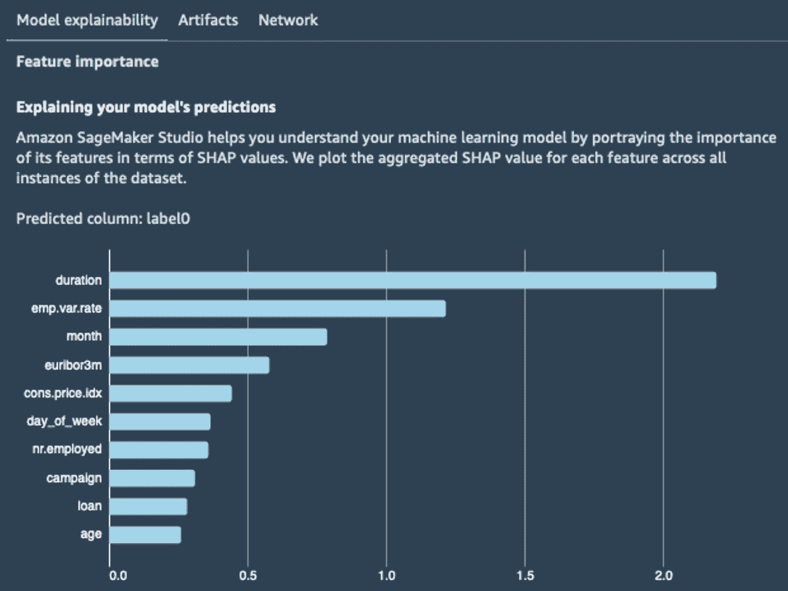
图 3.12–查看最重要的功能
- 在工件选项卡中，我们还可以看到构建模型中涉及的训练工件和参数的列表:输入数据、训练和验证分割、转换数据集、特征工程代码、算法(在我的例子中是 XGBoost)等等。
在这一点上，我们可以简单地部署最好的作业，但是相反，让我们使用 SageMaker Studio 内置的可视化工具来比较前 10 个作业。
比较工作
一个单独的 SageMaker 自动驾驶岗位默认培养 250 个岗位。久而久之，你可能会有几万份工作，不妨比较一下它们的性质。让我们看看如何:
- Going to the Experiments tab on the left, we locate our job and right-click Open in trial component list, as can be seen in the following screenshot: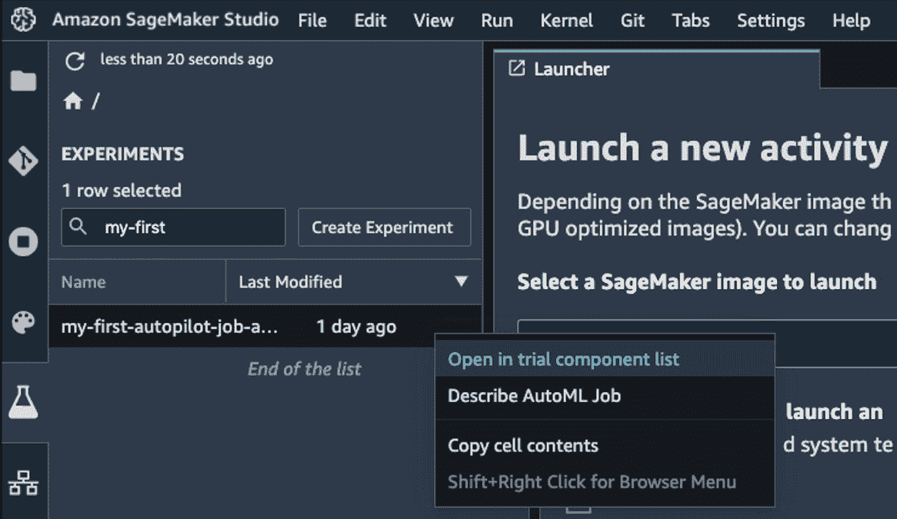
图 3.13–打开试验列表
- This opens Trial Component List, as shown in the following screenshot.
我们通过点击代表一个齿轮的图标打开右侧的工作台属性面板，我们取消选中除实验名称、试验组件名称和目标度量之外的所有内容。在主面板中，我们通过单击箭头，按目标指标降序排列作业。我们按住 Shift 键并点击前 10 个工作来选择它们，如下面的截图所示:
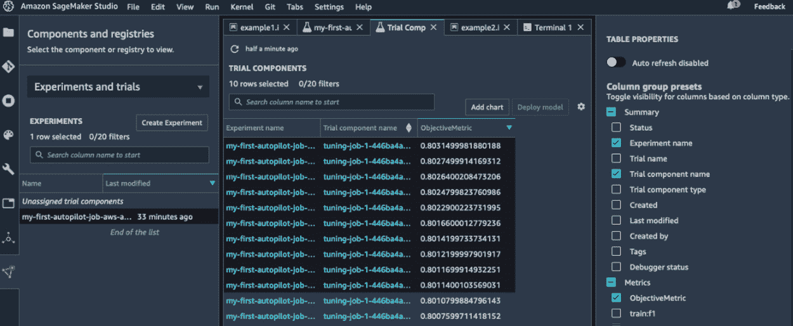图 3.14-比较工作
- Then, we click on the Add chart button. This opens a new view that can be seen in the following screenshot. Click inside the chart box at the bottom to open the Chart properties panel on the right.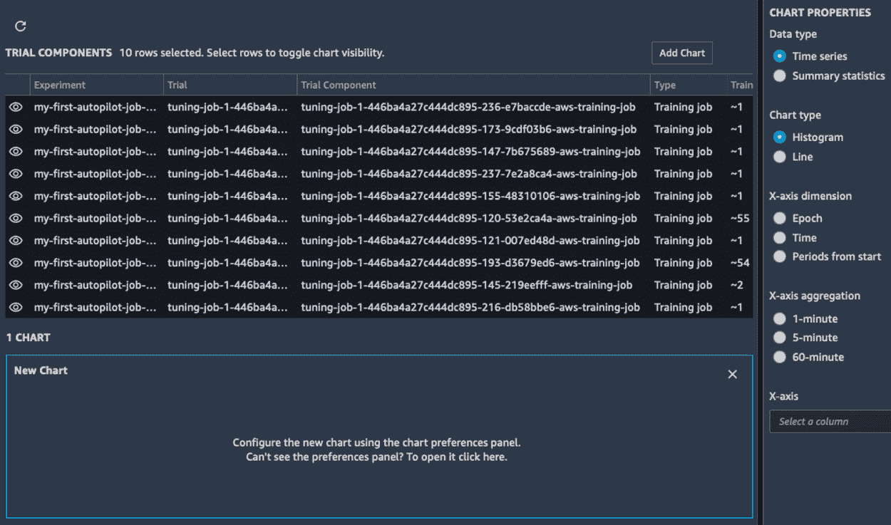
图 3.15–构建图表
由于我们的培训工作很短(大约一分钟)，不会有足够的数据用于时间序列图表，所以我们选择汇总统计来代替。我们将构建一个散点图，将 eta 和 lambda 超参数进行透视，如下图所示。我们还用我们的试验名称给数据点着色。
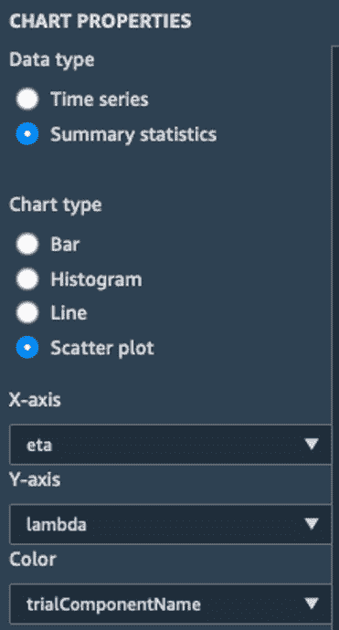图 3.16–创建图表
- 放大下面的图表，我们可以快速直观地看到我们的作业及其各自的参数。我们可以建立额外的图表来显示某些超参数对精确度的影响。这将有助于我们筛选出一些型号供进一步测试。也许我们最终会考虑它们中的几个来进行集合预测。
图 3.17–绘制超参数
部署和调用模型
SageMaker Studio 使得部署模型变得极其容易。让我们看看如何:
- Going back to the Experiments tab, we right-click the name of our experiment and select Describe AutoML Job. This opens the list of training jobs. Making sure that they're sorted by descending objective, we select the best one (it's highlighted with a star), as shown in the screenshot that follows, and then we click on the Deploy model button: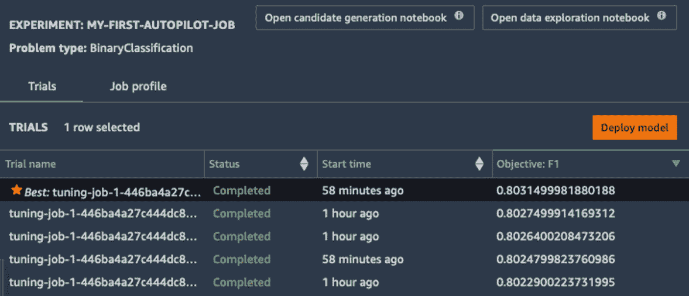
图 3.18–部署模型
- Under
my-first-autopilot-endpoint), leave all other settings as is, and click onml.m5.xlargeinstance: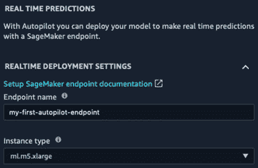图 3.19–部署模型
- Heading to the Endpoints section in the left-hand vertical panel, we can see the endpoint being created. As shown in the following screenshot, it will initially be in the Creating state. After a few minutes, it's In service:

图 3.20–创建端点
- 移动到 Jupyter 笔记本(我们可以重用我们编写的笔记本来下载数据集)，我们定义端点的名称，以及要预测的样本。这里，我使用数据集的第一行:
ep_name = 'my-first-autopilot-endpoint' sample = '56,housemaid,married,basic.4y,no,no,no,telephone,may,mon,261,1,999,0,nonexistent,1.1,93.994,-36.4,4.857,5191.0'
- 我们为 SageMaker 运行时创建了一个
boto3客户端。这个运行时包含一个 API，invoke_endpoint(https://boto 3 . Amazon AWS . com/v1/documentation/API/latest/reference/services/sage maker-runtime . html)。这使得嵌入到只需要调用模型的客户端应用程序中非常有效:import boto3 sm_rt = boto3.Session().client('runtime.sagemaker') - 我们将样本发送到端点，同时传递输入和输出内容类型:
response = sm_rt.invoke_endpoint(EndpointName=ep_name, ContentType='text/csv', Accept='text/csv', Body=sample)
- We decode the prediction and print it – this customer is not likely to accept the offer:
response = response['Body'].read().decode(”utf-8”) print(response)
该样本被预测为“否”:
no
- 当我们测试完端点后，我们应该删除它以避免不必要的费用。我们可以用
boto3(https://boto 3 . amazo naws . com/v1/documentation/API/latest/reference/services/sage maker . html # sage maker)中的delete_endpointAPI 来实现。client . delete _ endpoint):sm = boto3.Session().client('sagemaker') sm.delete_endpoint(EndpointName=ep_name)
恭喜你！您已经在 Amazon SageMaker 上成功构建、训练和部署了您的第一个机器学习模型。这很简单，不是吗？我们编写的唯一代码是下载数据集并用我们的模型进行预测。
使用 SageMaker Studio 是快速试验新数据集的好方法，也可以让更少的技术用户自己构建模型。高级用户也可以将他们自己的定制图像添加到 SageMaker Studio，他们将在https://docs . AWS . Amazon . com/sage maker/latest/DG/Studio-byoi . html找到更多细节。
现在，让我们看看如何通过 SageMaker SDK 以编程方式使用 SageMaker 自动驾驶仪。
使用 SageMaker Autopilot SDK
亚马逊 SageMaker SDK 包括一个简单的用于 SageMaker Autopilot 的 API。你可以在 https://sagemaker.readthedocs.io/en/stable/automl.html 的找到它的文档。
在本节中，您将学习如何使用这个 API 在与上一节相同的数据集上训练模型。
启动作业
SageMaker SDK 使启动自动驾驶作业变得极其容易——只需在 S3 上传你的数据，并调用一个 API！让我们看看如何:
- 首先，我们导入 SageMaker SDK:
import sagemaker sess = sagemaker.Session()
- 然后，我们下载数据集:
%%sh wget -N https://sagemaker-sample-data-us-west-2.s3-us-west-2.amazonaws.com/autopilot/direct_marketing/bank-additional.zip unzip -o bank-additional.zip
- 接下来，我们将数据集上传到 S3:
bucket = sess.default_bucket() prefix = 'sagemaker/DEMO-automl-dm' s3_input_data = sess.upload_data(path=”./bank-additional/bank-additional-full.csv”, key_prefix=prefix+'input')
- 然后我们配置 AutoML 作业，这只需要一行代码。我们定义了目标属性(记住，该列名为“y”)，以及存储训练工件的位置。或者，我们还可以为作业设置最大运行时间，每个作业的最大运行时间，或者减少将要调优的候选模型的数量。请注意，过多限制作业的持续时间可能会影响其准确性。出于开发的目的，这不是问题，所以让我们将我们的工作限制在一个小时，或者 250 个调优工作(以最先达到的限制为准):
from sagemaker.automl.automl import AutoML auto_ml_job = AutoML( role = sagemaker.get_execution_role(), sagemaker_session = sess, target_attribute_name = 'y', output_path = 's3://{}/{}/output'.format(bucket,prefix), max_runtime_per_training_job_in_seconds = 600, max_candidates = 250, total_job_runtime_in_seconds = 3600 ) - 接下来，我们启动自动驾驶作业，将训练集的位置传递给它。我们关闭日志(谁想阅读数百个调优日志？)，我们将调用设置为非阻塞，因为我们想要查询下一个单元格中的作业状态:
auto_ml_job.fit(inputs=s3_input_data, logs=False, wait=False)
这项工作马上开始。现在让我们看看如何监控它的状态。
监控作业
当作业正在运行时，我们可以使用describe_auto_ml_job() API 来监控它的进度:
- 例如，以下代码将每 60 秒检查一次作业的状态，直到数据分析步骤完成:
from time import sleep job = auto_ml_job.describe_auto_ml_job() job_status = job['AutoMLJobStatus'] job_sec_status = job['AutoMLJobSecondaryStatus'] if job_status not in ('Stopped', 'Failed'): while job_status in ('InProgress') and job_sec_status in ('AnalyzingData'): sleep(60) job = auto_ml_job.describe_auto_ml_job() job_status = job['AutoMLJobStatus'] job_sec_status = job['AutoMLJobSecondaryStatus'] print (job_status, job_sec_status) - Once the data analysis is complete, the two autogenerated notebooks are available. We can find their location using the same API:
job = auto_ml_job.describe_auto_ml_job() job_candidate_notebook = job['AutoMLJobArtifacts']['CandidateDefinitionNotebookLocation'] job_data_notebook = job['AutoMLJobArtifacts']['DataExplorationNotebookLocation'] print(job_candidate_notebook) print(job_data_notebook)
这将打印出两个笔记本的 S3 路径:
s3://sagemaker-us-east-2-123456789012/sagemaker/DEMO-automl-dm/output/automl-2020-04-24-14-21-16-938/sagemaker-automl-candidates/pr-1-a99cb56acb5945d695c0e74afe8ffe3ddaebafa94f394655ac973432d1/notebooks/SageMakerAutopilotCandidateDefinitionNotebook.ipynb s3://sagemaker-us-east-2-123456789012/sagemaker/DEMO-automl-dm/output/automl-2020-04-24-14-21-16-938/sagemaker-automl-candidates/pr-1-a99cb56acb5945d695c0e74afe8ffe3ddaebafa94f394655ac973432d1/notebooks/SageMakerAutopilotDataExplorationNotebook.ipynb
- 使用 AWS CLI，我们可以在本地复制这两个笔记本。我们将在本章的后面看一看它们:
%%sh -s $job_candidate_notebook $job_data_notebook aws s3 cp $1 . aws s3 cp $2 .
- 当功能工程运行时，我们可以使用与前面相同的代码片段等待完成，当
job_sec_status等于FeatureEngineering时循环。 - Once model tuning is complete, we can very easily find the best candidate:
job_best_candidate = auto_ml_job.best_candidate() print(job_best_candidate['CandidateName']) print(job_best_candidate['FinalAutoMLJobObjectiveMetric'])
这将打印出最佳优化作业的名称，以及它的验证准确性:
tuning-job-1-57d7f377bfe54b40b1-030-c4f27053 {'MetricName': 'validation:accuracy', 'Value': 0.9197599935531616}
然后，我们可以使用 SageMaker SDK 部署和测试该模型。我们已经讨论了很多内容，所以让我们把它留到以后的章节中，在那里我们将再次讨论这个例子。
清理
SageMaker Autopilot 创建了许多底层的工件，比如数据集分割、预处理脚本、预处理数据集和模型。如果您想彻底清理，下面的代码片段可以做到这一点。当然，您也可以使用 AWS CLI:
import boto3
job_outputs_prefix = '{}/output/{}'.format(prefix, job['AutoMLJobName'])
s3_bucket = boto3.resource('s3').Bucket(bucket)
s3_bucket.objects.filter(Prefix=job_outputs_prefix).delete()
既然我们已经知道了如何使用 SageMaker Studio GUI 和 SageMaker SDK 来训练模型，那么让我们来看看幕后的情况。工程师喜欢理解事物是如何工作的，对吗？
在 SageMaker 自动驾驶仪上深潜
在这一部分，我们将详细了解 SageMaker Autopilot 如何处理数据和训练模型。如果现在觉得这太高级了，欢迎您跳过这些材料。一旦你对这项服务有了更多的经验，你可以随时重新访问它。
首先，我们来看看 SageMaker 自动驾驶仪生产的神器。
工作工件
$ aws s3 ls s3://sagemaker-us-east-2-123456789012/sagemaker/DEMO-autopilot/output/my-first-autopilot-job/
我们可以看到许多新的前缀。让我们弄清楚什么是什么:
PRE data-processor-models/ PRE documentation/ PRE preprocessed-data/ PRE sagemaker-automl-candidates/ PRE transformed-data/ PRE tuning/ PRE validations/
preprocessed-data/tuning_data前缀包含从输入数据集生成的训练和验证分割。每个片段被进一步分解成小的 CSV 块。sagemaker-automl-candidates前缀包含 10 个数据预处理脚本(dpp[0-9].py)，每个管道一个。它还包含在输入数据集上训练它们(trainer.py)的代码，以及用 10 个结果模型(sagemaker_serve.py)中的每一个来处理输入数据集的代码。最后但同样重要的是，它包含自动生成的笔记本。data-processor-models前缀包含由dpp脚本训练的 10 个数据处理模型。transformed-data前缀包含训练和验证分割的 10 个已处理版本。tuning前缀包含在模型调整步骤中训练的实际模型。- 前缀包含可解释性报告。
下图总结了这些工件之间的关系:
图 3.21-总结自动驾驶过程
在接下来的部分，我们将看看两个自动生成的笔记本，它们是 SageMaker 自动驾驶仪中最重要的功能之一。
数据探索笔记本
一旦数据分析步骤完成，这款笔记本就可以在亚马逊 S3 买到。
在下面的屏幕截图中，第一部分简单地显示了数据集的一个示例:
图 3.22–查看数据集统计数据
如下面的屏幕截图所示，第二部分侧重于列分析:缺失值的百分比、唯一值的计数和描述性统计。例如，pdays字段同时具有最大值和中值 999，这看起来很可疑。正如上一章所解释的，999 确实是一个占位符值，意味着以前从未联系过客户。
图 3.23–查看数据集统计数据
如您所见，这个笔记本省去了我们自己计算这些统计数据的麻烦，并且我们可以使用它们来快速检查数据集是否是我们期望的。
现在，让我们看看第二本笔记本。正如你将看到的，它非常有见地！
考生代笔记本
本笔记本包含 10 个候选管道的定义，以及它们是如何被训练的。这是一个可运行的笔记本，高级练习者可以用它来回放 AutoML 过程，并不断完善他们的实验。请注意，这完全是可选的！直接部署顶级模型并开始测试是完全可以的。
说到这里，让我们手动运行其中一个管道:
- 我们打开笔记本，点击右上角的导入笔记本链接，保存一份读写副本。
- 然后，我们运行 SageMaker 设置部分中的单元，以导入所有需要的工件和参数。
- 转到候选管道部分，我们创建一个 runner 对象，它将启动所选候选管道的作业:
from sagemaker_automl import AutoMLInteractiveRunner, AutoMLLocalCandidate automl_interactive_runner = AutoMLInteractiveRunner(AUTOML_LOCAL_RUN_CONFIG)
- Then, we add the first pipeline (
dpp0). The notebook tells us: "This data transformation strategy first transforms 'numeric' features usingRobustImputer(converts missing values to nan) and 'categorical' features usingThresholdOneHotEncoder. It merges all the generated features and appliesRobustStandardScaler. The transformed data will be used to tune an XGBoost model". We just need to run the following cell to add it:automl_interactive_runner.select_candidate( {”data_transformer”: { ”name”: ”dpp0”, … } )如果你对
RobustImputer或ThresholdOneHotEncoder的实现很好奇，超链接会带你到sagemaker_sklearn_extension模块中合适的源文件(https://github . com/AWS/sagemaker-scikit-learn-extension/)。这样，您可以准确地理解数据是如何处理的。由于这些对象是基于 scikit-learn 对象的，它们应该很快看起来非常熟悉。例如，我们可以看到
RobustImputer建立在sklearn.impute.SimpleImputer之上，并增加了功能。同样，ThresholdOneHotEncoder是sklearn.preprocessing.OneHotEncoder的延伸。 - 快速浏览一下其他管道，我们可以看到不同的处理策略和算法。你应该看到线性学习器算法用在一些流水线上。它是 SageMaker 中的内置算法之一，我们将在下一章中介绍。你还应该看到 mlp 算法，它是基于神经网络的。
- 向下滚动，我们到达
dpp0.py脚本，该模型将使用 XGBoost 算法进行训练。 - 点击 dpp0 超链接打开脚本。正如所料，我们看到它构建了一个 scikit-learn transformer 管道(不要与由预处理和训练作业组成的 SageMaker 管道混淆)。数值特征中的缺失值被输入，分类特征被一键编码。然后，缩放所有特征并编码标签:
numeric_processors = Pipeline( steps=[('robustimputer', RobustImputer(strategy='constant',fill_values=nan))] ) categorical_processors = Pipeline( steps=[('thresholdonehotencoder', ThresholdOneHotEncoder(threshold=301))] ) column_transformer = ColumnTransformer( transformers=[ ('numeric_processing', numeric_processors, numeric), ('categorical_processing', categorical_processors, categorical)] ) return Pipeline(steps=[ ('column_transformer', column_transformer), ('robuststandardscaler', RobustStandardScaler())] ) - 回到笔记本，我们在运行数据转换步骤部分启动这个脚本:
automl_interactive_runner.fit_data_transformers(parallel_jobs=7)
- 这个创建了两个连续的 SageMaker 作业，它们的工件存储在为笔记本运行创建的新前缀中:
dpp0transformers on the input dataset.The second job processes the input dataset with the resulting model. For the record, this job uses the SageMaker Batch Transform feature, which will be covered in a later chapter.
- 回到 SageMaker 工作室，让我们进一步了解这两份工作。从
my-first-a-notebook-run-24-13-17-22-dpp0-train-24-13-38-38-aws-training-job和my-first-a-notebook-run-24-13-17-22-dpp0-transform-24-13-38-38-aws-transform-job开始。 - 双击工单名称打开在试用详情中打开窗口，如下图所示。它告诉我们关于这项工作的所有信息:参数、工件的位置等等:
图 3.25–描述一项试验
一旦数据处理完成，笔记本继续进行自动模型调整和模型部署。我们还没有讨论这些话题，所以我们暂时就此打住。我鼓励你在熟悉了笔记本的其他部分后，再去浏览它们。
总结
正如你所看到的，亚马逊 SageMaker Autopilot 使初学者和高级用户可以轻松地建立、训练和优化机器学习模型。
在这一章中，你学习了自动驾驶作业的不同步骤，以及从机器学习的角度来看它们意味着什么。您还了解了如何使用 SageMaker Studio GUI 和 SageMaker SDK 以最少的编码构建分类模型。然后，我们深入研究了自动生成的笔记本，它让您可以完全控制建模过程并保持透明。特别是，您学习了如何手动运行候选人生成笔记本来重放所有涉及的步骤。
在下一章中，你将学习如何使用亚马逊 SageMaker 中的内置算法来训练各种机器学习问题的模型。